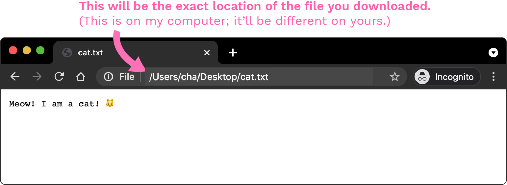

Your First Website
What is a website?
A website is the stuff that renders in your web browser. When you open up Chrome, or Firefox, or Netscape Navigator, what you see inside the frame is a website.
ILLUSTRATION: point to the inner frame of a web browser
How does my computer know what stuff to show?
When you go to a web address, it's kind of like making a phone call. You direct your request towards a unique web address (ex. www.duckduckgo.com), just like your call requests a specific phone number. The internet companies involved then do a bunch of work to make sure you see the right website, just like the phone companies do to get your call to the right person.
You could go further to say that seeing the website is like hearing a voicemail. Someone somewhere uploaded an audio file, and that same file gets played to you every time you call. Except in the case of a website, instead of just an audio file, it's usually a combination of a whole bunch of different files.
ILLUSTRATION: process of requesting & receiving website? maybe in parallel with the phone call process?
Try downloading this file - cat.txt - and opening in your browser! You can do this by just manually entering the file's address into your browser, i.e. file:///Users/cha/Desktop/cat.txt instead of where you'd normally write http://www.google.com.

If you're not sure what this address would be, don't worry! You can either:
- find the file in your computer's file viewer (ex. Windows Explorer or Mac Finder), right click, and "Open With" the browser of your choice.
- or open your browser first, and select the file from there. Ex. in Chrome, you'd need to go to File > Open File.

Oh hey, look at you! In essence, this is all a website is - files opened in a browser. In this case, it's just a plain text file.
What is code?
Your file right now is just a plaintext* file. You can tell by the .txt extension at the end.
*PlainText is actually the technical term here for the file type, not just a descriptive phrase!
Other file types (.html, .js, etc.) contain code.
Code is just a set of instructions humans can write for machines to read. Code files also just contain text, but each type has different and very particular rules.
Technically, you can write code on any program* on your computer that lets you write text, like TextEdit or Notepad, as long as you can save the file with the correct extension.
*Programs like Microsoft Word save a bunch of other data with your text - formatting, preferences, and other data - which is why they use their own specific .doc or .docx extension on these files. If you open one of these in TextEdit, you'll see a bunch of wacky symbols and whatnot; clearly not human-readable text.
How can a machine read my human instructions?
Think of it like a massive chain of translations. A machine on its own has no understanding of your textual instructions. The ony thing that affects a hunk of metal is whether electricity is flowing (often presented by 1) or not (0). That's where all the memes about hackers using binary (01010111010110100010100101) come from; at the end of the day, that sequence is all the machines understand.
At some point, some human was like, what if we group these signals into unique patterns? 01000001 = A, 01000010 = B, so on and so forth. (These are the real patterns, by the way!)
That way, instead of having to write "010000010100001001000011" every time, you could just write "ABC" and automate the translation - way easier. And then we kept repeating this process.
ILLUSTRATION: like the game of telephone, we're passing a message through multiple layers of translators
So a programming language, then, is just one of these "translation layers". In technical terms, the closer you get to the 0's and 1's side, the "lower level" the language is. A higher level language is more layers away, so it usually feels easier for humans to read and write.
ILLUSTRATION: https://mrgcoding.com/wp-content/uploads/2020/06/language-spectrum.png maybe some robots/machines at one end & people at the other?
So when you learn JavaScript, one of the higher level languages, you can write something as simple and human-legible as var x = 9 (setting a variable X to the value 9). It feels almost like magic that the computer can "understand" you, but it's just layers and layers of work from engineers past that you can now build on top of.
How do I create these code files?
As mentioned previously, you can technically use any program as long as it can output plain text, like TextEdit or Notepad.
However, it might be useful for you to install a text editing application that is meant specifically for programmers, usually called a "text editor" or "I.D.E." ("Integrated Development Environment"). Most of these programs are free so you can always just download one and replace it later to your preferences.
Here are some free options:
Download one of these (or another text editor of your choosing) and you'll be ready to write!
Try opening up your txt file in this text editor. There a lot of different ways to do this (drag the file onto the program icon, use "Open with" again, open it from the text editor via File > Open, etc.) - play around with them and see what's most convenient for you.
Once you have it open, you should be able to edit the text. Write whatever you want in there, hit Save, and refresh your browser - you should see it update to your recent changes.
Congratulations, that's your first website! ✨